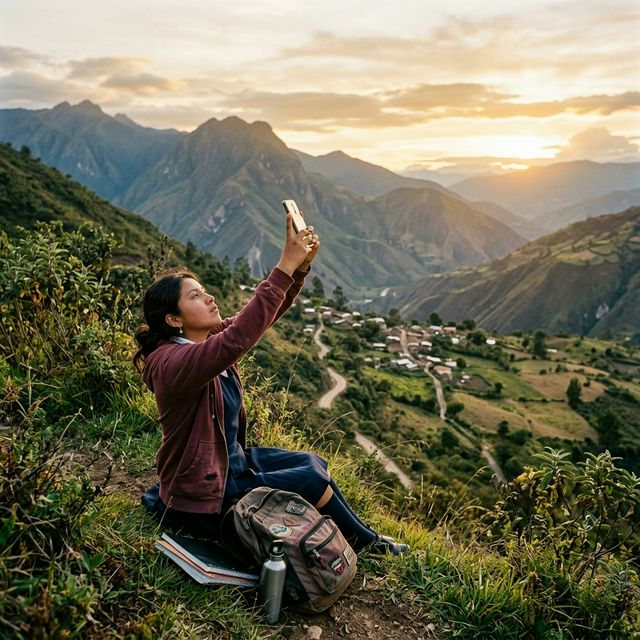
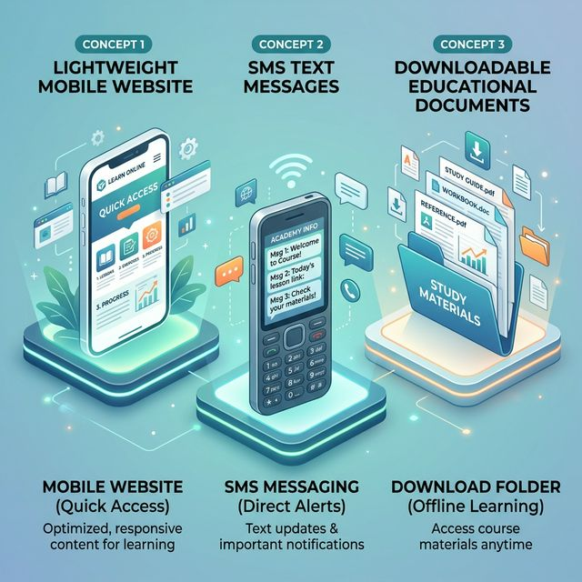

ADSO Project 2026
Problem-Solving Through Responsive Web Design in Rural Colombia
Explore the ProjectWeak Signal and Digital Exclusion in Rural Colombia
The lack of a stable internet signal prevents rural populations from accessing essential services like SENA platforms, virtual health appointments, and updated market prices for crops. This technical barrier creates a "digital gap" that deepens social and economic inequality between the city and the countryside.
The digital exclusion impacts entire communities across Colombia's most remote regions.
Students in remote departments like Chocó, Guajira, and Cauca who struggle to access educational platforms and submit assignments due to non-existent or unstable internet connections.
Local farmers and workers who depend on cellular signal for their economy — from checking market prices for crops to communicating with buyers and accessing agricultural guidance.
Families living in areas where 4G signal is non-existent and 3G is unstable, cutting them off from telemedicine, government services, and digital financial tools.

Three practical, technology-driven solutions designed to work even with the most limited connectivity.
A responsive website built with "mobile-first" principles, optimized to load text and essential content even with a 2G/3G signal. Minimal images, compressed assets, and progressive loading ensure accessibility for all.
A section within the web portal that teaches users how to access government information via text protocols when data is unavailable. Works on any basic phone without internet access.
A library of educational materials designed to be downloaded once at a "Punto Vive Digital" and used later offline. PDFs, guides, and tutorial content available without persistent connectivity.

Project Moment 1: Problem Exploration & Initial Brainstorming.
The persistence of a deep digital gap in rural Colombia, characterized by 2G/3G signal instability and 4G non-existence, which isolates communities from development.
In "Colombia Profunda", connectivity is a luxury. Students must climb hills for signals, making SENA platforms and essential health services inaccessible, deepening social inequality.
How to ensure high performance on 2G equipment? Can we implement PWA (Progressive Web Apps) for effective offline storage?
Send us your feedback or questions about the project.
The students behind this project, united by a shared commitment to digital inclusion.
Software Developer
Software Developer
Software Developer